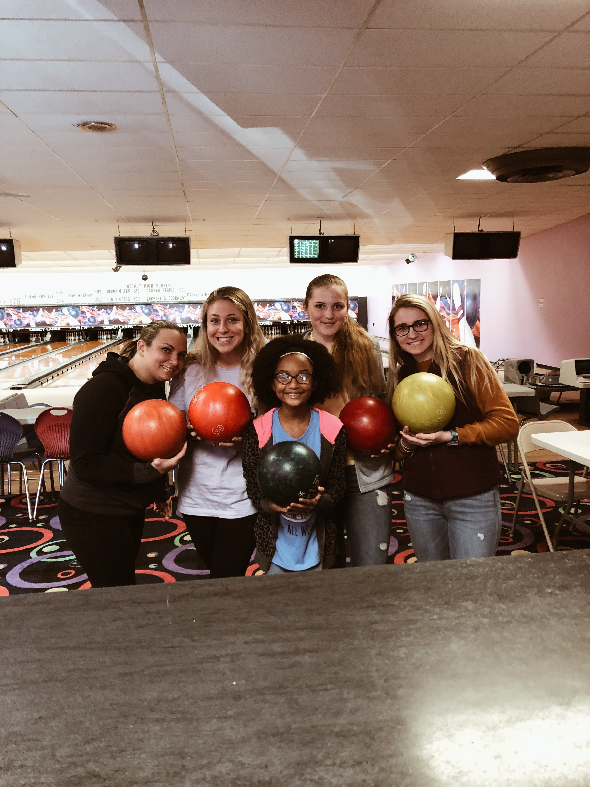
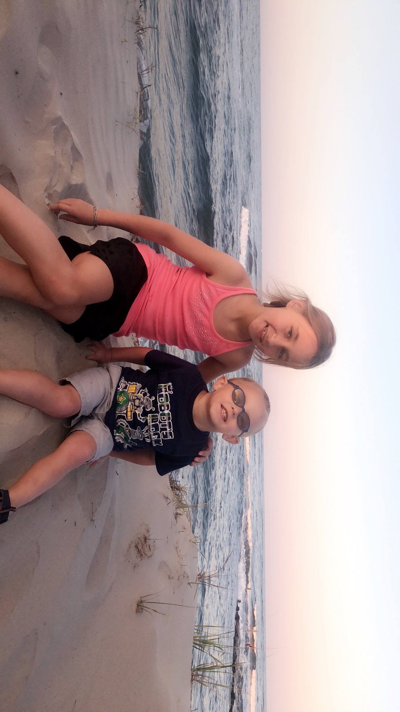

Some of My Friends and Family after a couple hours of bowling.
Some of my best friends at a birthday party.

Two of my little cousins, that are like my younger siblings because of all of the time I spend with them.